Key Takeaways
- Provide an all-in-one collaboration features in one app.
- High-quality video conferencing system.
- Available on Windows, macOS, mobile devices and web browsers.
- Support meeting records, virtual background, breakout rooms and note-taking.
- Easy to install and manage.
Hey, let’s learn about Boost Productivity with Zoom Workplace on Windows 11 | Setup Guide for Meetings Chat Calls and Collaboration. Zoom workplace is an AI-powered collaboration app used for online meetings, team collaboration, and video calls. This application helps to conduct meetings Including chat and messaging, screen sharing and Calendar Integration.
Table of Contents
Boost Productivity with Zoom Workplace on Windows 11 | Setup Guide for Meetings Chat Calls and Collaboration
Usually zoom workplace app is used for online classes, office meetings, interviews, webinars and presentations. It works on both android and apple phones and also on computers. In this post, I will explain the different ways to install zoom workplace app on windows 11 pc. Especially, I will show you how to install zoom workplace from Microsoft store and how to use it on windows 11.
Guide to Install Zoom Workplace App
You can easily use zoom workplace app on your windows 11 pc. Install zoom workplace app from Microsoft store or from their official website. The following are the step to install Zoom workplace app on your windows 11 pc from Microsoft store. Select Microsoft store from the start menu.
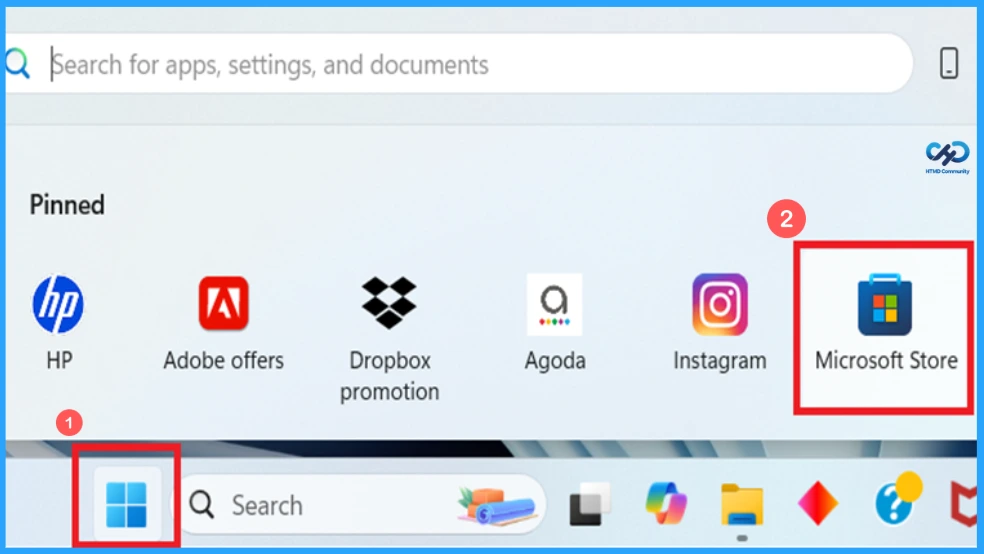
Find the Zoom Workplace app in Microsoft store
You can easily find the Zoom Workplace app in the Microsoft Store. Simply search for Zoom Workplace app and click the install button to install it. Refer to the screenshot shown below for guidance on how to install zoom workplace app on your windows 11 pc.
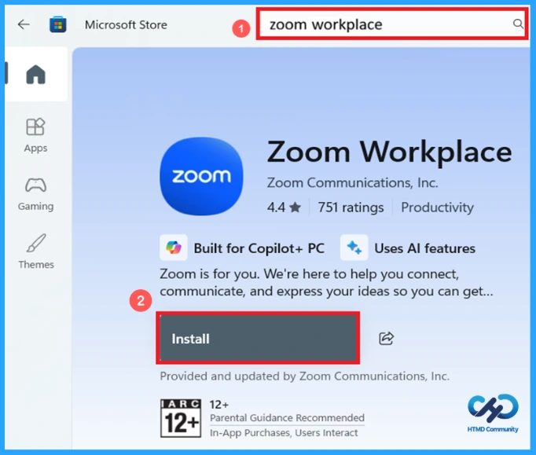
Zoom Workplace App Download Status
In the below screenshot that the zoom workplace app is started downloading. Here you can see 37.57 MB of 139.6 MB downloaded. You can also share or copy the link by clicking the share button near downloading. A small description provided above download status about this application.
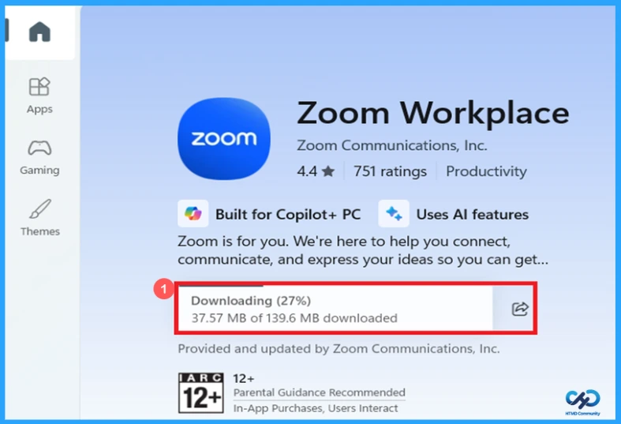
As shown in the below screenshot that the zoom workplace app is now installed in your windows 11 pc, and the app provide a short note about zoom workplace app. It will help us to connect, communicate, and express our ideas. The app is trusted by millions of enterprises, small businesses, and individuals. You can open the app from the start menu.
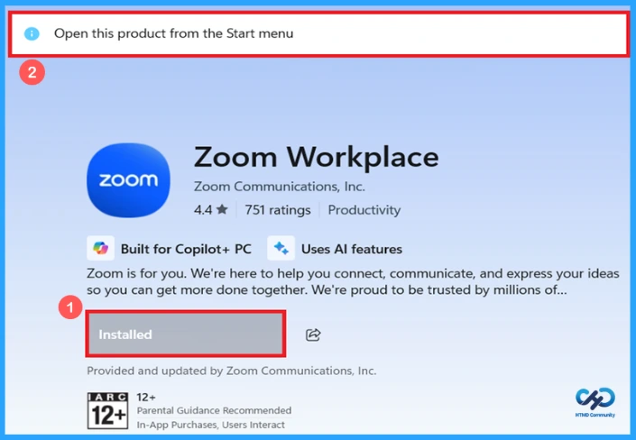
Sign in to Zoom Workplace
You can sign in to the Zoom Workplace app on your windows 11 pc. After opening the application, the Zoom Workplace home screen will appear as shown in the screen short below. It comes with options such as sign in, join meeting, and sign up. click the sign in button to access your account and start using the app.
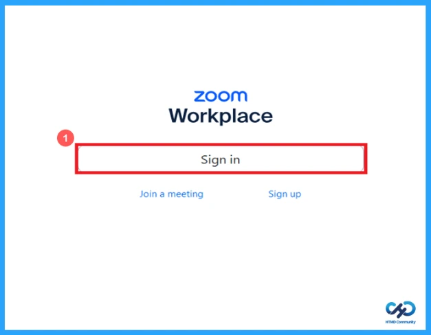
Sign in using Email or Other Accounts
You can easily Sign in to the application using email or phone number. Also Sign in through SSO, Google, Apple, Facebook or Microsoft. If you don’t have any account, you can create by clicking Sign up option and click the chat with us option for help. Here the process is continued with an email account for Sign in and click the next button to continue.
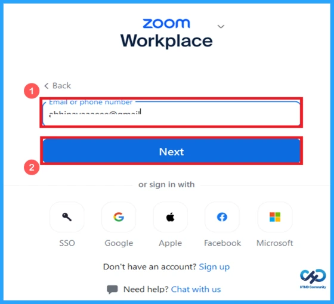
Entering Password to Sign in to Zoom Workplace
Now enter the password of your Zoom account in the password column. If you have forgotten your password, reset it by clicking “forgot password” option, you can also choose the try another way to sign in option for different sign in method. Here a password is used to sign in and click the sign in button to continue.
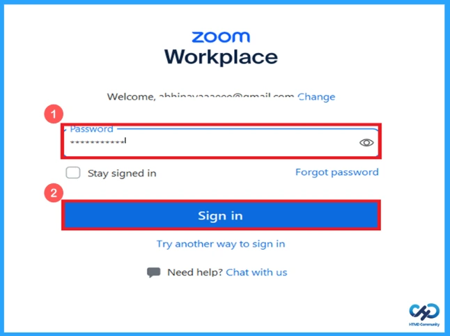
Passkey Setup for Zoom Sign in
You can create a passkey to sign in to your Zoom account by simply clicking next button. This passkey makes you to sign in faster in the future without entering a password. If you do not want to set a passkey, you can click the “skip for now and sign in” to continue.
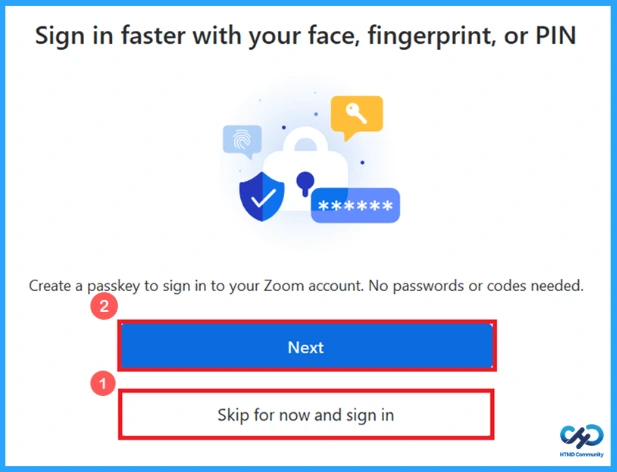
Home Screen of Zoom Workplace
The home screen of Zoom Workplace is given below in the screenshot. Here you can see the overview of your meeting schedule for the day and shortcuts to start new meeting, join meeting, schedule a meeting or share your screen. You can create and manage personal notes in my notes. Zoom app provide AI companion as your personal assistant.
| Options | Used to |
|---|---|
| Home | The main dashboard of zoom. |
| Meetings | To view and manage all meetings. |
| Team chat | For messaging and communicate with team members. |
| Scheduler | Schedule meeting with date and time. |
| Hub | To share resources, manage projects, and collaborate with team members. |
| More | Access additional Zoom tools and settings. |
| New meeting | Start an instant meeting |
| Join | Join to an existing meeting |
| Schedule | Plan a meeting for later |
| Share screen | To share your screen |
| My notes | Create and manage quick notes |
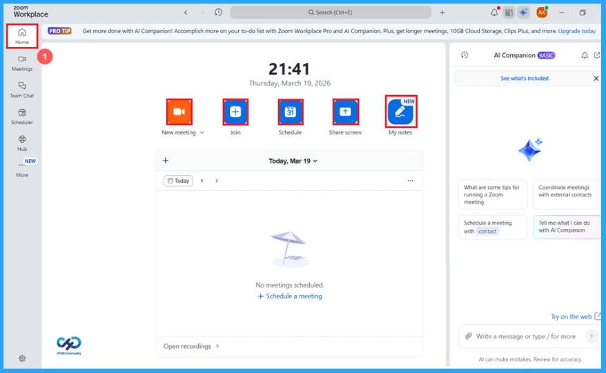
New Meeting Settings
You can see these options by simply clicking the new meeting button. If the “start with video” option is checked, your webcam turns on automatically when the meeting started. When you use the “Use my personal meeting ID (PMI)” option, you can use your permanent id for a meeting. And you see an ID below. This is your personal meeting ID (PMI). Secondary menu shows:
- Copy ID: You can copy the ID to your clipboard.
- Copy invitation: Share the full meeting details to others.
- PMI settings: Permanent room settings.
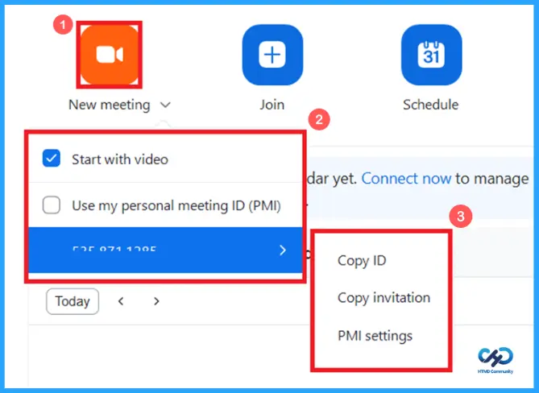
How to Join a Meeting
You can join a meeting by simply clicking the join button. Enter the meeting ID or personal link name to join a meeting. your name will come automatically, also decide the audio and video to be off. Click join to join in. Or click on cancel to cancel the meeting.
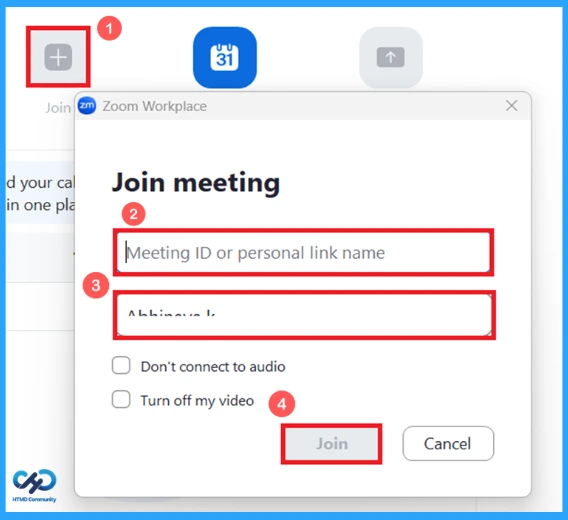
How to Share your Screen
You can share your screen by simply clicking the share screen button. Enter the room code or meeting ID and click the share screen button to share with the meeting. click on cancel button to cancel it.
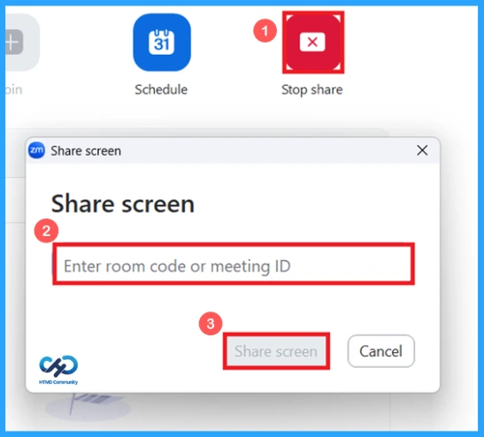
Zoom Workplace AI Companion
The AI Companion is your personal assistant this is an advanced feature in Zoom Workplace app. It helps you to search for email, chats, meetings. You can summarize or answer questions about meetings, preparing for upcoming meetings, getting someone’s profile details, find other people like team members, also you can ask AI Companion to schedule a meeting, coordinate meetings with external contacts.
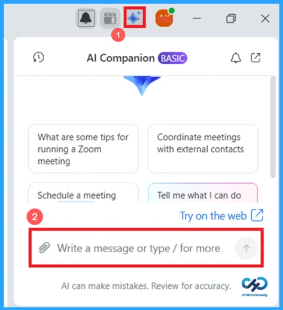
My Notes
You can take notes during meetings. Open “my notes” during a meeting, click on “Type here if desired” and start typing your points, ideas, or important notes. Zoom will automatically capture transcripts, convert speech into text. You can see it under “transcript”. Click on play button to replay recorded part. Click done to save the notes automatically in your zoom account. You can upgrade for unlimited experiences.
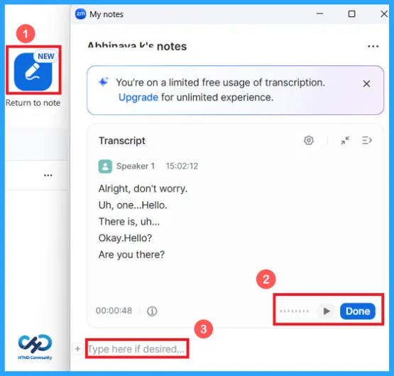
How to Schedule a Meeting
You can schedule a meeting by simply clicking the schedule button from home page. You can give a title to your meeting, so participants can see it when they join the call. You can set the date and time to start and end the meeting. You can set the time zone for your meeting this ensures the meeting appears at the correct time for people in different region. Set your meeting repeated for daily, weekly or never. You can type names or email address in “add invitees” to add others.
- Join the meet using automatically generated ID/using personal meeting ID.
- Create meeting agenda by clicking create agenda.
- You can upload files and documents through attachments.
- Entering with passcode/waiting room.
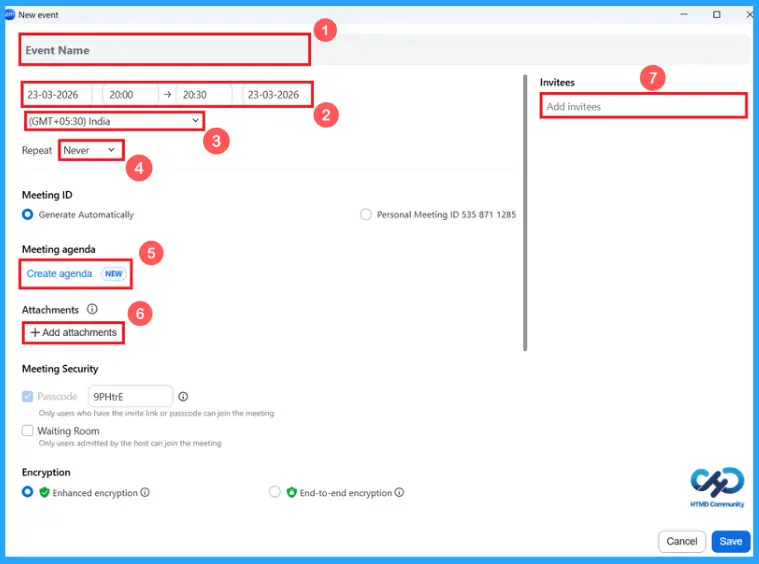
Advanced Settings to Schedule a Meeting
You can enable enhanced encryption or end-to-end encryption option, enable continuous meeting chat. Decide video to be on or off by host or participants. Enable computer audio use option. Calendar or google calendars can use. You can enable advanced features shown in the screenshot below. Now you can save and schedule a meeting by simply clicking save button or you can cancel by clicking cancel button.
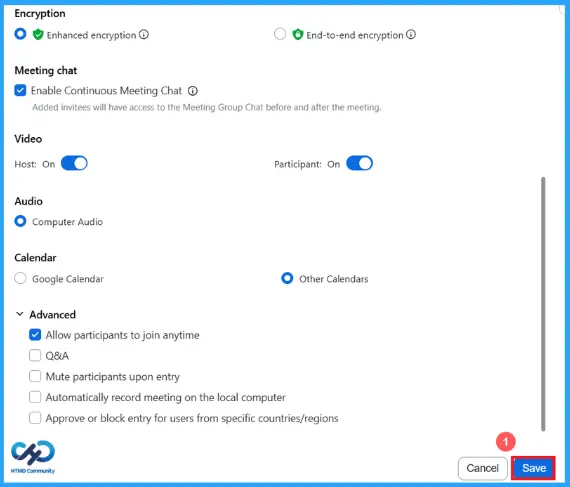
Meetings
View all scheduled meetings in this section. You can see a mini calendar on the left side, click any date to see the event. Use left or right arrows to move between months. Connected profile will appear below the calendar. Present month and year will appear on the top of the screen. On the top right side, you can see a search bar, refresh icon, filter by icon and agenda with drop down arrow. There is a message in the screenshot “No events available yet”. you can start a meeting using the personal meeting ID shown below.
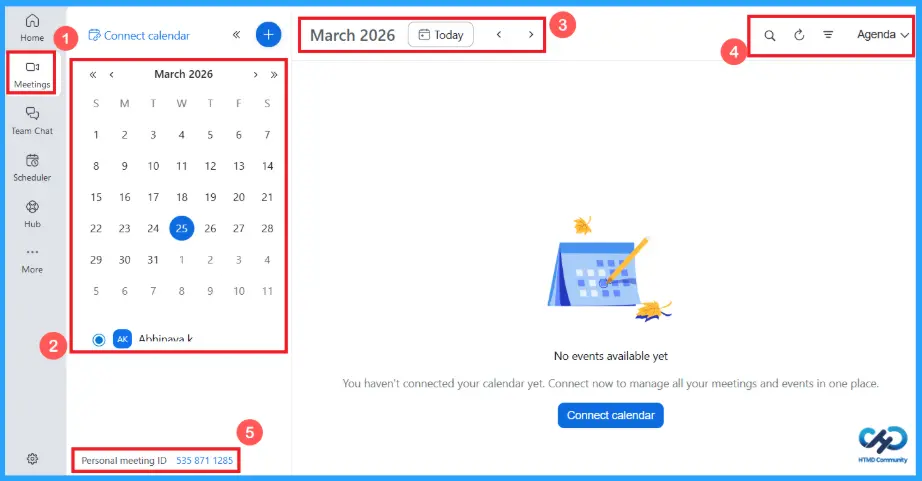
Filter by Options and Functions
Click on the filter menu button. It opens filtering options for your meetings or events. It helps you to organize and find specific meetings or events quickly.
| Options | Functions |
|---|---|
| Hosted by you | Meetings created or hosted by you |
| With cloud recordings | Recordings saved by the cloud |
| With meeting chat | Meetings with chat messages |
| With meeting summery | Meetings having AI-generated summaries |
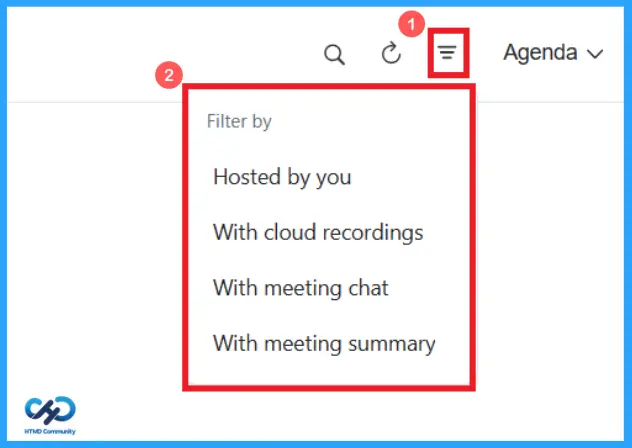
Manage your Schedule in Zoom Workplace App
Click on the dropdown arrow near agenda, then select preferred option. Currently it is set to work week. You can see a horizontal red line in the below screenshot. this is a current time indicator.
- Day: Single day’s hourly slots
- Work week: Monday to Friday slots (as in the screenshot)
- Week: It shows the full week slots
- Month: Monthly details of events or meeting
- Agenda: List of upcoming meetings and events
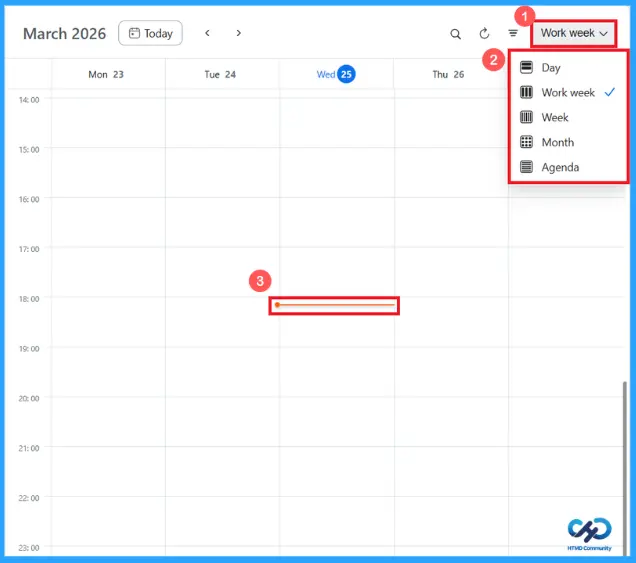
Instant Meeting using Meet Now Feature
You can start a meeting instantly by simply clicking the blue plus button. There are two options, to create an event and a meet now option. Schedule a meet by simply clicking create event option. Click on Meet now to start an instant meeting. Your personal meeting room window will appear as in the screenshot. Click the start button to start your meeting this is useful for urgent discussions or quick meetings.
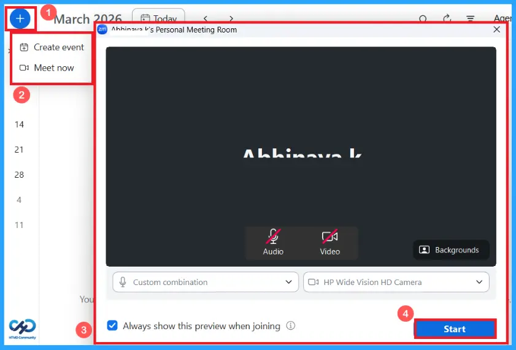
Audio Settings
You can control your microphone and speaker during a meeting by simply clicking the audio button. Click the drop up arrow to explore more features. Select, test and adjust your audio devices to hear others clearly.
| Options | Use |
|---|---|
| Select a microphone | Useful for multiple devices |
| Select a speaker | Choose where you want to hear audio |
| Noice removal | Reduce background noise |
| Personalized audio isolation | Focus on your voice |
| Original sound for musicians | Keeps natural sound |
| Test speaker & microphone | To check your devices |
| Leave computer audio | Disconnect your audio without leave the meeting |
| Audio settings | Open detailed settings for audio |
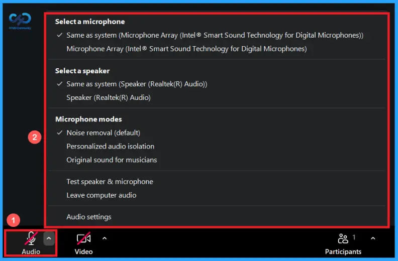
Video Settings
Control your video and camera during a meeting. This feature will make your meeting more professional. You can select the camera to be on or off. Click the drop up button for more features.
- Select a camera: choose which camera to use
- Blur my background: focus on you and blur your surroundings
- Auto-frame my video: adjust camera to keep you centered
- Video and effect settings: open detailed settings for video
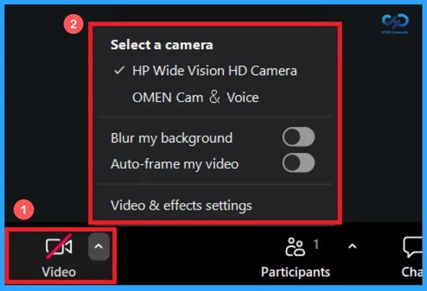
Add Participants
Add participants by simply clicking the Participants tool. you will get a window that is hosted by you, invite others to your meet by clicking the invite button. You will get a window like shown below in the screenshot. To invite people through contacts or email, copy invite link or copy invitation and share to others. You can add profile photo and rename account name by clicking the three Dot near unmute button. You can enable mute all upon entry, play join and leave sound option by clicking the bottom three dot in Participants window.
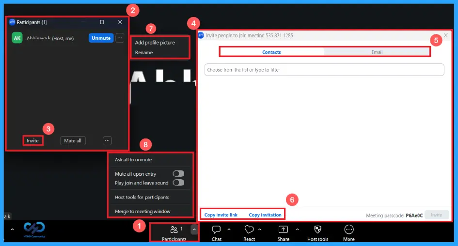
For host tool, click the drop up arrow on Participants tool. You can invite others by simply clicking Alt + l and copy invite link by Alt + shift + l. you can remove this option from tool bar. Click the host tools for participants option then you will get a window like shown in the below screenshot. You can enable corresponding permissions. You can suspend participant activities when a meeting is disrupted.
- Chat: Send message to group or individuals.
- Rename themselves: Change their display name during the meeting.
- Unmute themselves: Turn microphone on without host approval.
- Start video: To turn on camera.
- Request to record: Ask permission to record the session.
- Transcribe in my notes: Use note taking or transcription feature.
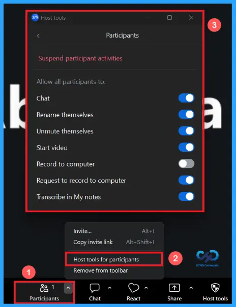
Advanced Features
Click the advanced option in the host tools window. Some options are shown here from the advanced settings. such as share, docs, white board and apps. These important, advanced features will help us to make our meet more Professional.
| Options | Use |
|---|---|
| Share | Enable one participant at a time or multiple can share simultaneously. |
| Captions | Allow closed captioning and lock caption language. |
| Docs | Allow participants to share docs. You can choose who can share and create docs. |
| White board | You can choose who can share white board. |
| Apps | Share meeting content with apps also choose who can start a collaboration. |
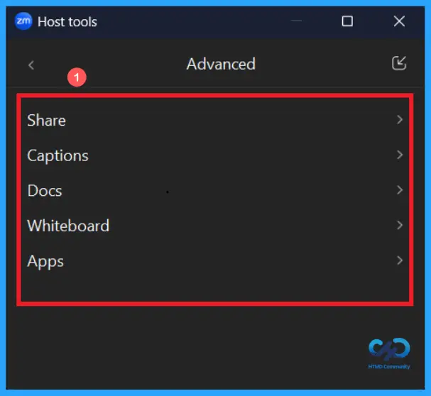
Chat
Chat with team members by simply clicking the chat tool in the app. This helps us to share our thoughts and ideas with others during a meeting. You can see messages from participants replies and conversations and add emojis, gifs and files. Send messages to all participants through clicking “everyone”. “New chat” is to start a private conversation. At right side settings participants can chat with everyone and anyone directly, you can change this to no one, host and co-hosts and everyone. Also save the chat for later use and merge to meeting window.
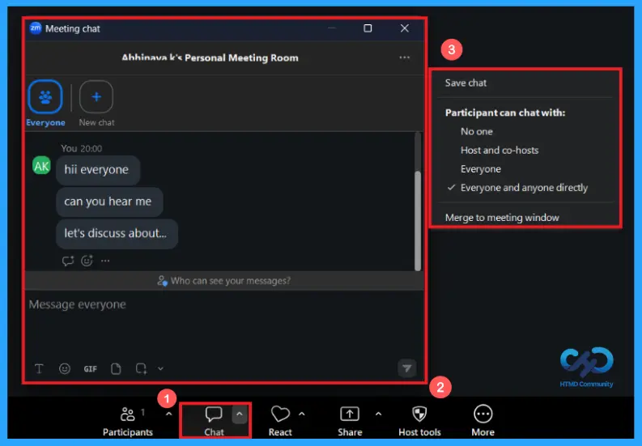
Reactions
The reaction panel in zoom app allows you to communicate through reactions during a meeting without interrupting the speaker. Send animated reactions through “send with effect” feature. Send emoji reactions like shown in the screenshot. You can access more emojis by clicking the three dots. Send feedback by simply clicking the circular icons, for reply like yes/no or speed up/slow. Raise your hand or send be right back message by clicking the large two buttons.
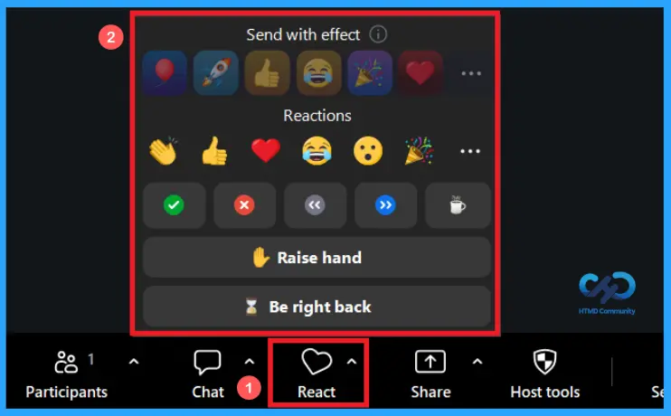
Screen Sharing in Instant Meeting
Click the share option from tool bar, choose screen to share. Choose entire screen, a specific application window or other content. The entire screen option is to share everything visible on your monitor, application window lets you share only a selected app. You can control the video how to appear on the screen with content only, as background, over the shoulder and side by side. Enable share sound to include computer audio, optimize for video sharing and share zoom window. Click “share” to start presenting your selected content.
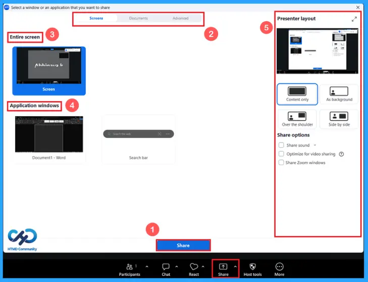
Document Tab
This document tab allows you to share files quickly during a meeting instead of sharing. Zoom whiteboard opens a built-in whiteboard where you can write and convey ideas with others. Document repositories will connect zoom with cloud storage services. You can choose from given options to open and share files directly from the cloud during a meeting.
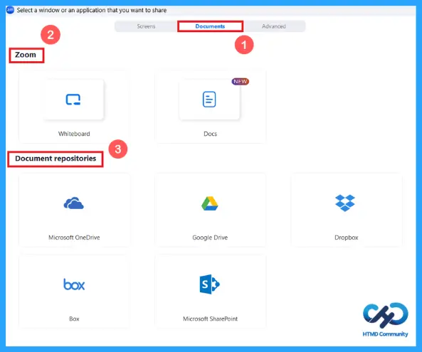
Advanced Screen Sharing Options in Zoom App
The advanced option allows you to share specific types of content. It is useful for Presentation, media and interactive sessions. Such as iPhone/iPad via Air play, power point as background, portion of screen, computer audio, video file, clips and second camera.
| Options | Used to |
|---|---|
| iPhone/iPad via Air play | Share mobile screen using air play |
| Power point as background | Present slides while video appears |
| Portion of screen | Share only a selected area |
| Computer audio | Share only your system sound |
| Video file | Play and share a video directly |
| Clips | Share video clips quickly |
| Second camera | Used to show physical objects |
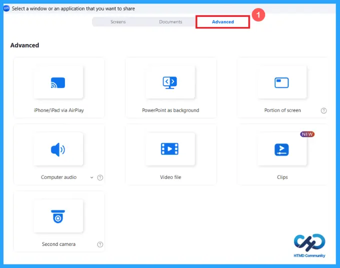
Start Sharing
When you started screen sharing, you will get a screen shown like in the screenshot. Advanced screen sharing tools are shown top of the screen, you can pause sharing, set layout, annotate, hide your meeting. Click on annotate to get tools shown on the right side of screen, use these options according to your needs. Click more for other options.
- To record
- Breakout rooms
- Spotlight this share
- Disable annotation for others
- Share computer sound
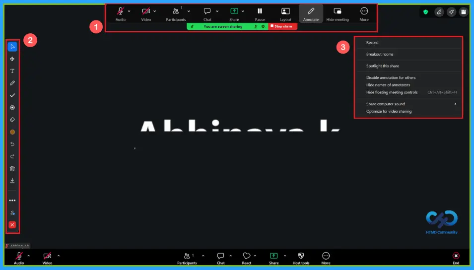
Select the host tool panel from tool bar. This is only available to the meeting host. When you enable “lock meeting”, no new participants can join the meeting. Enable waiting room to control others to join the meeting. Participants first stay in a waiting area, and host can admit them to the meeting. When you enable hide profile pictures, participants profile pictures are hidden during the meeting.
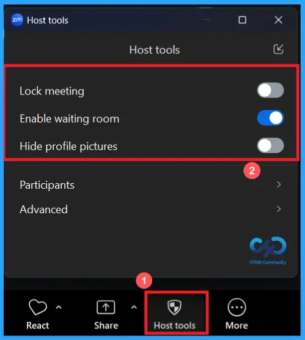
Click on more option for extra tools. You can see the advanced tools in the screenshot. Record, show captions, breakout room, docs, apps, meeting info, transfer to room and settings. These are the extra tools. It will make your meet more professional.
- Record: To record your important meetings.
- Show captions: Enable captions for your meet in different language.
- Breakout rooms: You can create breakout rooms.
- Docs: Share your important documents and files.
- Apps: Use external tools without switching windows.
- Meeting info: See all meeting information.
- Transfer to room: Move the meet to nearby zoom rooms.
- Settings: For other meeting settings.
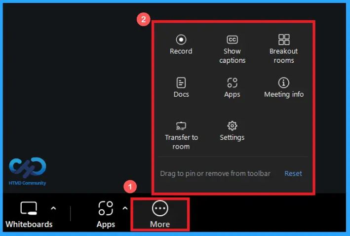
Docs
Zoom docs is a built-in document sharing tool which allow participants create, edit and share documents in real time without leaving the meeting. You can search for recently opened, personal, docs shared by others and starred docs. Select ready-made formats of meeting by selecting templates to start a quick and structured documents. Click on “create to co-edit” to create a new document and collaborate live with meeting participants.
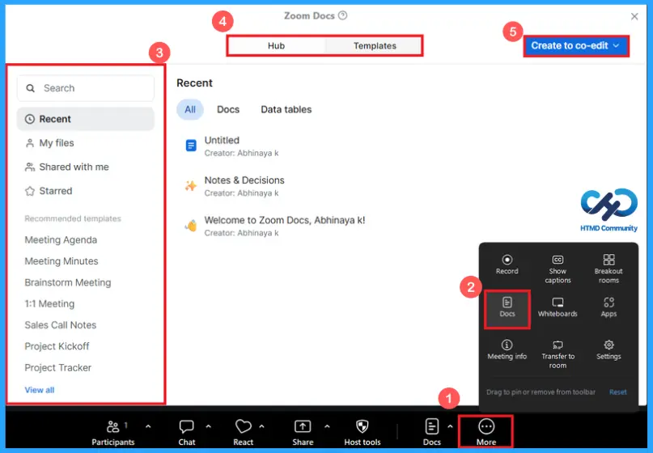
Settings Panel Options
Click the more options to go to the meeting tools settings. Here you can see meeting tool settings options such as video & effect, audio, display & controls, recording, hare screen, accessibility.
| Options | Use |
|---|---|
| Video & effects | Let’s you control your camera settings |
| Audio | To manage your microphone and speaker settings |
| Display & controls | To manage meeting display and manage on-screen controls |
| Recording | To manage your recording settings |
| Share screen | Controls screen sharing settings |
| Accessibility | Provide closed captioning and other advanced features |
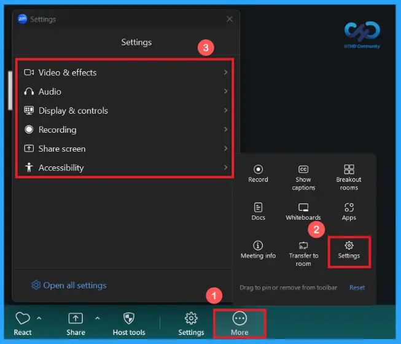
Layout Options
Click on the layout option on top of the zoom meeting window. This will help you to control how participants appear on your screen. You can enable end-to-end encryption, upgrade to pro, take notes and ask ai companion.
- Enable view mode options such as speaker, gallery, dynamic gallery, multi-speaker and immersive according to your needs.
- Sort your gallery in a preferred order.
- Share your video order by clicking follow host’s video order.
- Change your meeting theme.
- Hide/show Self view and non-video participants.
- You can Enable meeting timers.
- Exit full screen.
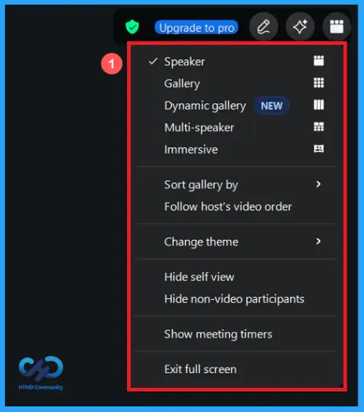
End Meeting
Click on the end button on the tool bar to end your instant zoom meeting. You can see two options end meeting for all and leave meeting. When you choose end meeting for all, the meet will end for other participants too. Click on leave meeting, then only you will leave the meet.
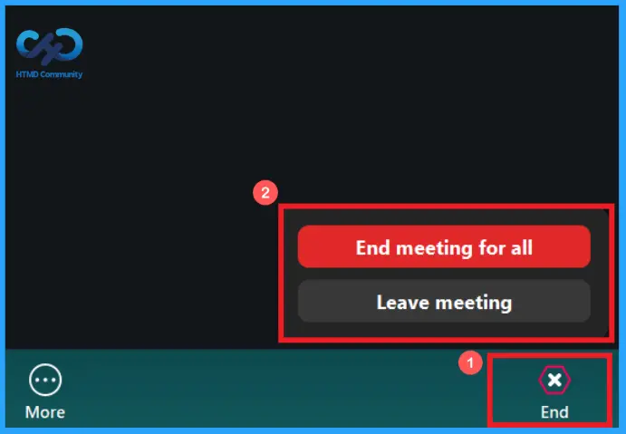
Zoom Calendar
The calendar setup feature in zoom app helps you to connect calendar so you can manage meetings and events inside zoom. Click on connect calendar option in the meetings screen. Zoom calendar is zoom’s built-in feature this is a paid feature upgrade to access it. You can only connect one third party account. Connecting another will replace the current one. You can connect calendar with google, Microsoft 365, Microsoft exchange.
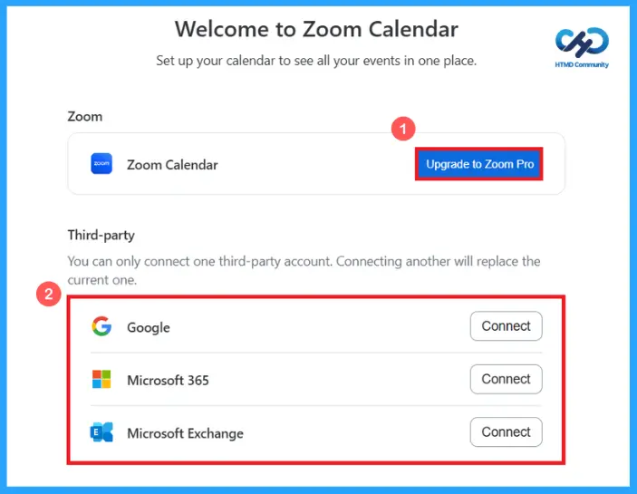
Team Chat
Team chat feature is used to quickly create different type of chats and collaboration spaces. View conversations in one place. Access chats, channels and messages by simply clicking corresponding options shown in the screen shot. Click on the team chat to enable or manage sidebar behavior and badging. At the right side of the window, you can read and send messages and view chat history. Click on the filter by icon to control how chats are displayed, such as all, unread only, filter by, sort by and mark all as read. Click team chat to enable or manage sidebar behavior and badging.
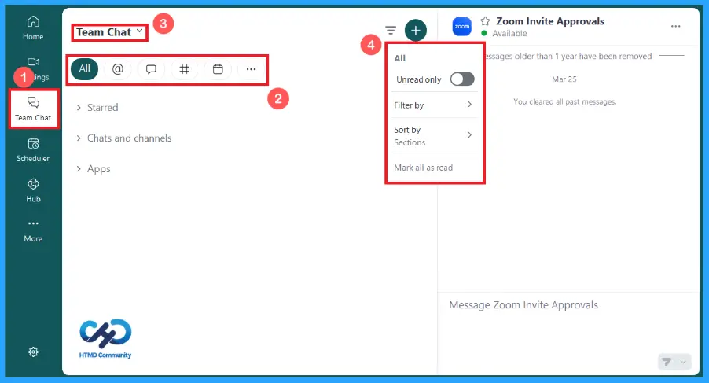
New Options in Team Chat
This menu having several options to start new communication or organize your chats. Options such as message, channel, folder, shared space, invite new contact and join channel.
| Options | Used to |
|---|---|
| Message (ctrl+ n) | Start a new private chat with a person |
| Channel | Create a new channel with a team. Everyone in the channel can send messages and collaborate. |
| Folder | Organize your chats and channel into folders. |
| Shared space | Create a collaborative space including multiple channels and members. |
| Invite new control | Add others to your zoom contacts |
| Join channel | Join to an existing public or shared channel |
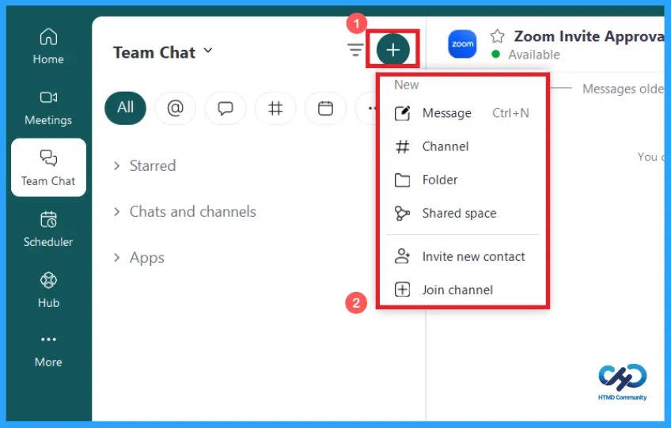
When you click on the three dots, it opens a menu with additional tools to manage chats, messages and activity. This gives you a quick access to extra chat sections and helps you to organize your messaging workspace.
- Starred: Shows starred messages and chats
- Apps: Shows integrated app within zoom
- Drafts: Shows unsent messages you started typing
- Sent: Display messages that you’ve already sent
- Bookmarks: Saved messages or links for quick access later
- Remainder: Shows remainders you’ve set for messages or tasks
- Missed calls: Lists all missed calls in zoom app
- External: Shows chat with external contacts
- Drag to pin or reorder: You can customize this section by dragging options
Zoom Scheduler
Zoom scheduler is a tool which is designed to streamline the process of booking meetings by reducing the need for back-end-forth emails. Share your booking page and let others choose a time that work for both sides. Click on the “create booking page” to create. Here you can check date and time slot for schedule a meet. Set details and availability to book a page.
Details
To create a booking page, set details for a meet. You can share via a link to share your real-time availability. Give a title for the page first also you can see a booking page link with duration. Select how you want to meet others, on phone call or in person. Set description about meeting to share with guests. Click on the next button to set availability.
Availability
Here you can choose the days and times you are available for bookings. you could change this later, if you needed. Select your available days and choose to start and end time. Add multiple time slots per day using the “+” icon. Select time zone to ensure that your availability is shown correctly to others based on your region. Check the live preview of how your availability looks to others. Click on the create button to finalize and create your booking.
Hub Feature
The hub feature in zoom workplace app, it acts like a central workspace where you can manage, search, and organize all your meeting-related content in one place. Quickly find your files, notes, recordings, and other zoom assets.
| options | Use |
|---|---|
| Search bar | Allows you search across all zoom assets. |
| Home | Main dashboard of hub. |
| Notifications | Important notifications are sorted here. |
| All files | Access all sorted files. |
| My files | Personal files are sorted here. |
| Shared folders | A central hub for team docs. |
| All meeting assets | Everything related to meetings. |
| Recordings | Saved meeting records. |
| Summaries | Ai-generated meeting summaries. |
| My notes | Saved notes are sorted here. |
| Pinned section | Pinned important files for quick access |
| Templates | Pre-designed formats |
| Trash | Deleted items |
| settings | Advanced hub settings |
Docs Feature with AI Companion
Docs Feature is basically a built-in document editor combined with ai assistance. Docs Editor is shown left side of the window. You can create and edit documents, give title, type normally or use tables and lists. Share button and editing tools are on the top, click three dots for more advanced options. Use AI Companion panel to generate or improve content directly in your document.
- Start writing with AI Companion: Get AI generated content for you.
- Kick off with templates: Use ready-made formats.
- Build a data table: Create structured tables for projects.
Whiteboard
Whiteboard feature is a digital canvas where you can draw, write and collaborate visually with others. You can sketch your ideas, plans, brainstorm together. Use this feature with ready-maid templates for easy use. Vertical tool bar on left side gives you everything you need. Some options are given on the top of window such as facilitation tools, comment panel, meeting from whiteboard. Enable collaborator cursors by clicking on your profile on the top, present this canvas and share with others. Zoom in/out options are provided below.
Clips
Zoom clips allows you to record short videos of yourself or your screen and share them with others. You can record by clicking the “record a clip” at top. Click the start recording to record and add chapters, summary, tags about the clips. Create clips with avatars and slides for advanced presentation of your clips. You don’t need to schedule meetings for small things, use this feature instead. Upgrade to access more features.
- My clips: Access all your recordings here.
- My playlists: Organize clips into collections.
- Shared with me: Find clips that others sent you.
Tasks
Zoom tasks is a project management tool in zoom workplace app. Basically this tool is designed to organize your work, access your all tsks here. Find tasks with new suggestions, due this week, overdue, completed. Create your tasks by simply clicking the plus button on the top. Give the complete details for your task. You can give a title, due date, description & attachments, steps to add, priority and status. Share the task with team members. Click create button to create.
Notes
Notes is a zoom feature that lets you create, edit and manage notes inside zoom during or after a meeting. Zoom proving an advanced feature, upgrade to access it. Upgrade your notetaking with the new and more powerful editing experience. “Migrate data” button allows you to transfer all old notes into new system. You can access older notes by clicking “view classic notes”. Recent notes section displays your latest notes for quick access.
Apps
Zoom apps feature helps you to add and use extra tools inside zoom to make your meeting more interactive. Installed apps are in the “my apps” section and you can add built-in apps of zoom. Browse and install apps from zoom app marketplace by clicking “add apps”, search for the apps you want to integrate directly into meetings or the zoom interface. This feature is an app store inside zoom. Adding extra functionality to zoom.
Zoom mail helps you to manage your emails directly inside zoom. You can start using email inside zoom. Zoom provide a built-in service for manage your emails. This is a paid plan upgrade to access it. Connect your existing email accounts through google or Microsoft by clicking the connect option. You can only connect one third-party account. Connecting other will replace the current one.
Zoom workplace app provide contact feature to manage people you communicate with. You can easily start chats, call, meetings with contacts. Organize your communication and access frequently contacted people quickly.
- All contacts: Lists all the contacts you’ve added.
- Search bar: Quickly find a saved contact by name or email.
- “Plus” button: Used to Invite a new contact, create personal contact, connect account.
- Contact requests: Shows incoming or outgoing requests.
- External: People who are outside your organization.
- Connected account: Contacts synced from other linked accounts.
- Company directory: Contacts within your organization.
Activity Centre
Click the bell button on the top to view the activity centre. This is like a notification hub. The focus section shows you important updates. Other section displays general notifications. You can sort your notification by simply clicking the filter by icon. Select your preferred product notifications and notification type. Enable unread only option to get the latest updates first. This feature helps you to track important updates in one place.
General Settings
Click the settings tool for app settings. You can see the option panel on left side. General settings have some options like appearance, theme etc. you can enable or manage these options in general settings.
| Options | Use |
|---|---|
| Appearance | To set the colour mode of app display |
| Theme | Apply an accent colour when using light mode |
| Emoji & reaction skin tone | Set the skin tone for emojis |
| Navigation bar | Reset zoom workplace navigation bar to default order |
| Zoom workplace app | Enable app features |
| Presence status | Change your status |
| Ai companion | Set up ai companion |
| Auto call | Automatic call receiving |
| Zoom apps | Clear data and cookies |
Video & Effects
Click on video & effects to set the settings. Set up your video settings while joining in a meet. To set video, appearance, virtual backgrounds, avatars, video filters, studio effects. For more advanced meeting experience.
- Video: Select your camera and video settings.
- Appearance: Enable your appearance features.
- Virtual background: Select given background and add preferred video or image by clicking the “+” button.
- Avatars: Select your avatars or create new.
- Video filters: Add video filters for your meetings.
- Studio effects: Add extra features to your avatars.
Audio Settings
Zoom workplace app provide audio settings to control how your sound works during a meeting, what you hear and what others hear. Useful when switching between devices. Advanced audio settings to improve your meeting session.
| Options | Use |
|---|---|
| Speaker | Manage speaker features |
| Microphone | Manage microphone features |
| Microphone mode | Select enhanced audio options |
| Audio profile | Enable live performance audio |
| Headset | Enable for automatic sync |
Notifications & Sound Settings
This Settings will help you to control how you get alerts and sound for calls, messages, and notifications. You will never miss your important calls or messages. You can customize alerts based on your preference.
- Sounds: Setting volume, ringtones, notification sounds
- Desktop notifications: Enable desktop notification preference options.
- Send desktop notifications for: Enable and manage options for desktop notifications.
- Activity centre notification: Manage activity centre notifications.
Meetings & Webinar Settings
This feature setting is to control what happens before and when you join a meeting. Helps you to control everything before entering meetings. Improves your focus and productivity. Provide some important features like join experience, in-meeting and in-webinar experience and controls.
| Options | Use |
|---|---|
| Join experience | Enable options about joining meet and webinar. |
| In-meeting & in-webinar experience | Meeting window view and other advanced options to enable. |
| Leave experience | Opening and leaving experience for a meet |
| Advanced | For advanced settings |
Recording Settings
Recording settings in zoom workplace app helps you to control where your meetings are saved and what included in the recording. This setting includes local recording storage, recording preferences and other advanced options.
- Local recording storage: Select location for recording storage and related features.
- Recording preferences: Select and enable recording preference options.
- Advanced: Opens more detailed recording settings.
Share Screen Settings
Zoom app provide share screen settings feature. These options control how you view other’s shared screen and how your own screen is shared during meetings. Top section controls how you see others, middle section controls how others see you, bottom section controls sharing process behaviour.
| options | Use |
|---|---|
| When others share | When someone else is sharing their screen. |
| When I share | Controls how your screen appears to others. |
| Share button behaviour | Preview available content. |
| Advanced | Advanced screen share settings |
Team Chat Settings
Team chat settings are specially to manage how your chat sidebar and messages are organized. Settings are mainly for how chats are “organized”, sidebar behaviour and unread messages are opened.
- Left sidebar behaviour: Select options for message grouping and opening a section or folders, mange badge settings and reset sidebar to default.
- Unread messages: Controls where zoom takes you when opening unread chats. Start at the first unread and start.
- Chat preferences: Show link preview and manage blocked users.
- Message transaction: Select massage translation language.
Accessibility Settings
This section is all about making app easier to see, read, and use. Especially for users who need better visibility or reduced visual strain. Helps to users who prefer larger text or clearer captions and anyone who wants a more comfortable viewing experience.
| Options | Use |
|---|---|
| Chat and video | Controls display features |
| Closed captioning | Controls subtitles features |
| Screen reader alerts | Enable options for features in meeting, webinar, chat and meeting permissions |
Keyboard Shortcuts
Keyboard settings in zoom workplace is basically a control centre for using the app faster with your keyboard instead of clicking buttons. Global shortcut means the shortcut will work even if zoom is running in the background. Reset all shortcut keys back to default settings if you changed anything. Shortcut keys are sorted into meeting, team chat, clips, phone and general.
Statistics
Statistics section is like a performance dashboard that tells you how zoom is using your system and network.it helps you to find if zoom is running smoothly, diagnose issues like lag, freezing, or poor video quality and monitor your system usage during meetings. General system and app performance is shown in overall section. Audio, video, screen sharing performance are sorted in other corresponding sections.
- CPU: Shows how much of your computer’s processor zoom is using.
- Memory: Shows how much RAM zoom is using.
- Bandwidth: Internet used by zoom
- Network type: Wi-Fi or wired connection
- Proxy: If any proxy is used
- Connection type: Connection quality
- Data centre: Server location handling your meeting
- Encryption: Shows security type
- Version: Shows app version
- Report problem: Send a report to zoom if something not working
- Run a test meeting: Start a trail meeting to check audio, video and performance.
Report Problem
This feature is basically a built-in way to tell zoom when something isn’t working properly. Select a product you having issues, select problem type and describe the problem. You can attach a file or capture screenshot. Select “include log file” to send technical data automatically or select “I have an open ticket” if you already reported this issue. Click submit button to submit your report to zoom support.
Run a Test Meeting
You can run a test meet by simply clicking on “run a test meeting” button. Start a trail meeting to check audio, video and other performance. Check smart test to run a meeting without internet issues. Other advanced options are provided for a better meeting experience.
| Options | Use |
|---|---|
| Smart test | Run a test meeting and run a test for most recent meeting. |
| Advanced test | Use the host’s domain name or IP address to conduct a connection test to specific host. |
| App settings | Check status, policies, updater policies. |
| App performance | Check the web view app performance. |
| Request lifecycle | Check request details, network performance overview and request performance analysis |
| Experiment | Enable or disable experimental features of zoom client. |
| Net record | View and manage network diagnostic logs |
| Settings | Opens more advanced options |
My Account
My account section in zoom app is basically your personal account dashboard inside zoom. Here you can see your profile information, click on “edit my profile” to change your name, picture or other details. You can upgrade app by clicking “upgrade to pro” option. Extra tools available in view advanced features. Find your logged in details below, this helps you to track and manage sessions for security.
Profile
Click on the profile icon in your screen to check your status and account settings menu in zoom workplace app. You can set your availability status here and manage your personal account preferences. Customization options like setting status message, work location details can set here.
- Availability status: Set your availability status for others to see whether you are free to chat or meet.
- Set status message: You can type a custom note that will display above chat box.
- Work location: Specify your work location (office or home).
- Profile: Your personal details and bio.
- Check for updates: Check latest features in zoom app.
- Settings: Open settings.
- Help: Help centre of zoom workplace app.
- Add account and sign out: You can add another account and sign out present account.
- Upgrade now: Upgrade zoom app for advanced features.
End Results – How to Set a Meet in Zoom Workplace App
Schedule your meeting in zoom app. Set meeting topic, agenda, duration and time. enter meeting details and share meeting invitation with participants. Or you can start an instant meeting using meet now feature. Enable or disable video as needed and click on start button. Invite other participants to your instant meeting. If you have any trouble, zoom provide an ai companion for a better use.
How to Take Notes During a Meeting in Zoom Workplace App
Click on my notes option in home. start typing your points, ideas, or important notes. Zoom will automatically capture transcripts, convert speech into text. You can see it under “transcript”. Click on play button to replay recorded part and save it by clicking done button.
Need Further Assistance or Have Technical Questions?
Join the LinkedIn Page and Telegram group to get the latest step-by-step guides and news updates. Join our Meetup Page to participate in User group meetings. Also, Join the WhatsApp Community and WhatsApp Channel to get the latest news on Microsoft Technologies. We are there on Reddit as well.
Author
Anoop C Nair has been Microsoft MVP from 2015 onwards for 10 consecutive years! He is a Workplace Solution Architect with more than 22+ years of experience in Workplace technologies. He is also a Blogger, Speaker, and Local User Group Community leader. His primary focus is on Device Management technologies like SCCM and Intune. He writes about technologies like Intune, SCCM, Windows,
Cloud PC, Windows, Entra, Microsoft Security, Career, etc